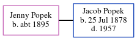

Jenny Popek (née Popek) c1895 -
[ Home ] | [ Calendar ] | [ Surnames Index ] | [ Census Index ] | [ Family History ]Jenny Popek, the wife of Jacob Popek (the first cousin five-times-removed on the mother's side of Michele Copp (née Phillips)), was born in Yugoslavia c. 18951.
During her life, she was living in Will, Illinois, USA in 19501; and in Joliet, Will, Illinois1.
Citations
- 1950 United States Federal Census Ancestry.com Operations, Inc. (Department of Commerce. Bureau of the Census. 1913-1/1/1972. Population Schedules for the 1950 Census, 1950 - 1950. Washington, DC: National Archives at Washington, DC. Population Schedules for the 1950 Census, 1950 - 1950. NAID: 43290879. Records of the Bureau of the Census, 1790 - 2007, Record Group 29. National Archives at Washington, DC., Washington, DC.)
Family Tree
Generated by ged2site. Last updated on Jun 6, 2024